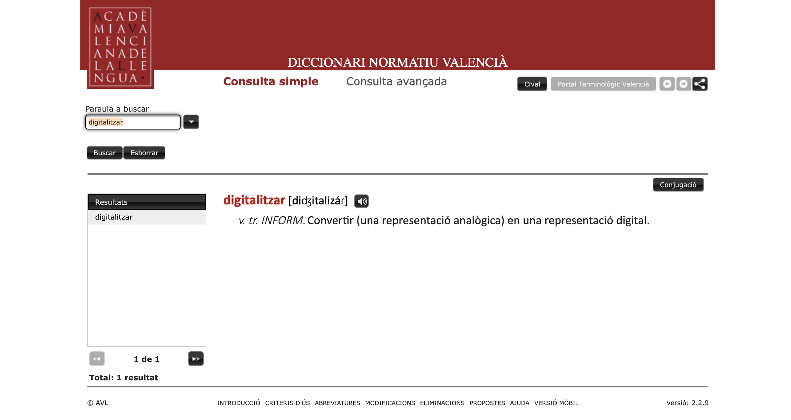
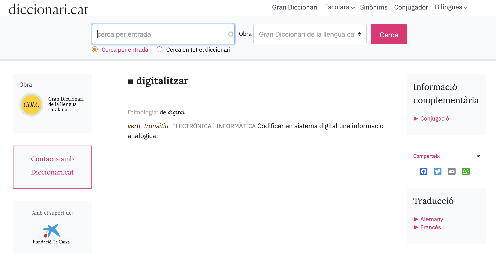
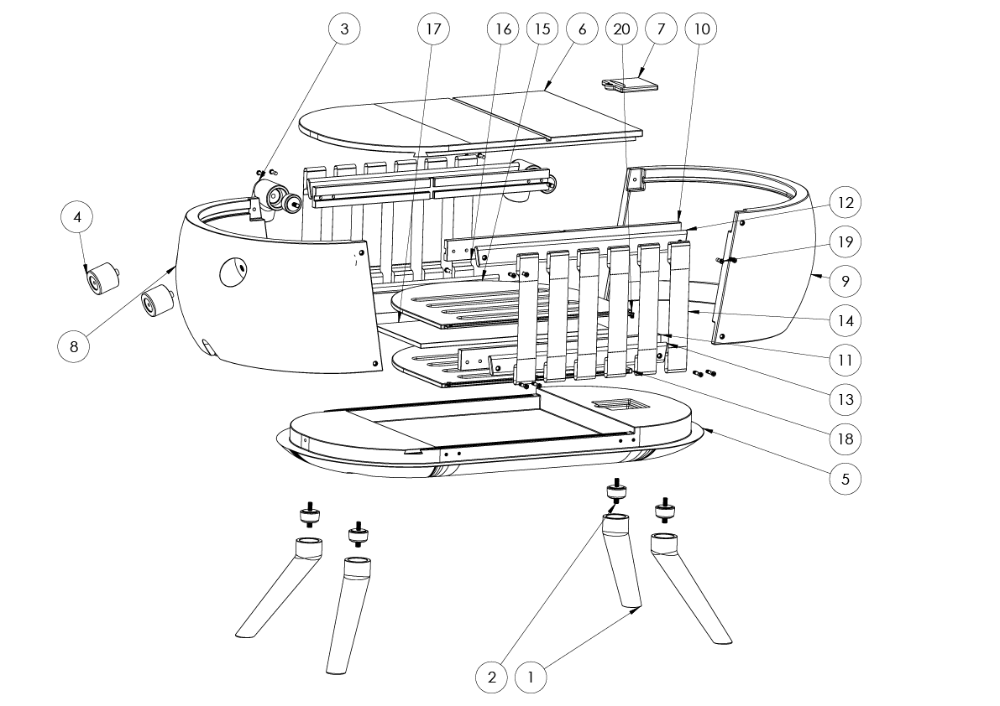
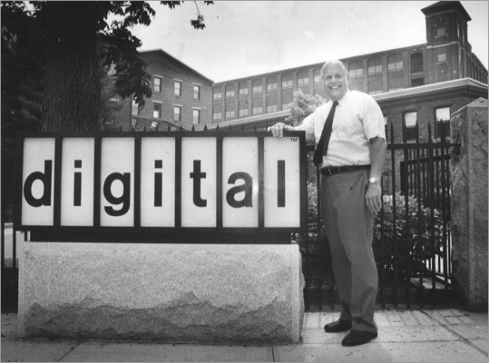

Repercussió de la digitalització en els sectors productius
Digitalització Aplicada al Sector Productiu
Institut Pompeu Fabra — Curs 2025/26
Digitalitzar: què és?
Reflexionem sobre què significa per a vosaltres la digitalització...
Comparteix la teua visió


Què entenem per digitalització?
La digitalització és el procés de transformar informació, objectes i processos físics o analògics en formats digitals mitjançant la utilització de tecnologies informàtiques.
Què vol dir transformació digital?
La transformació digital és el procés de transformació dels processos empresarials mitjançant tecnologies digitals per optimitzar l'eficiència operativa i crear nous models de valor.
Transformació de Processos
Conversió de processos analògics i manuals en sistemes digitals automatitzats.
Integració Tecnològica
Connexió de sistemes per crear ecosistemes digitals coherents.
Innovació Contínua
Capacitat d'adaptar-se ràpidament mitjançant solucions àgils.
Integració Tecnològica

Transformació de Processos

Innovació Continua

"No hi ha cap raó perquè cap individu tingui un ordinador a casa seva."
Components clau de la transformació digital
- Cloud Computing: Infraestructura i serveis informàtics accessibles a través d'Internet, permetent escalabilitat i flexibilitat
- Big Data: Recopilació i anàlisi de grans volums de dades per identificar patrons i prendre decisions informades
- Intel·ligència Artificial: Sistemes que simulen processos d'intel·ligència humana com l'aprenentatge i la resolució de problemes
- Internet of Things (IoT): Xarxa d'objectes físics equipats amb sensors que recullen i intercanvien dades
- Robòtica i Automatització: Màquines programables que executen tasques amb precisió i eficiència
"Hem tingut una revolució digital, però no necessitem continuar tenint-la."
Digitalització vs Transformació Digital
Mentre que la digitalització pot ser entesa com un pas cap a la modernització i l'eficiència, la transformació digital és un canvi estratègic integral que busca transformar tots els aspectes de l'organització per a estar al dia amb els canvis tecnològics i de mercat, i adaptar-se millor a les necessitats futures.
Activitat 1: Investigació i Anàlisi de Transformació Digital
Objectiu: Investigar com una empresa real ha implementat la digitalització en els seus processos.
1. Selecció d'empresa
Trieu una empresa coneguda amb digitalització implementada
2. Investigació
Fonts: articles, informes, notícies, entrevistes
3. Anàlisi components
Automatització, documents digitals, comunicació, dades
4. Beneficis i reptes
Identifiqueu millores obtingudes i obstacles superats
Resultat: Resum de la transformació digital i aprenentatges extrets.
Avantatges de digitalitzar una empresa industrial d'extrem a extrem
Què suposa digitalitzar una empresa?
Què suposa digitalitzar una empresa?
Digitalitzar una empresa és el procés de transformar-la mitjançant l'ús de tecnologies digitals, amb l'objectiu de millorar:
Eficiència
Optimització de processos i reducció de temps d'execució
Productivitat
Automatització de tasques i millor aprofitament dels recursos
Competitivitat
Avantatges en el mercat i diferenciació respecte la competència
Adaptació
Capacitat de resposta ràpida als canvis de l'entorn empresarial
Aquest procés implica no només la conversió de dades i documents físics en formats digitals, sinó també una reestructuració integral de com l'empresa opera, comunica, analitza informació i proporciona valor als seus clients.
Tecnologies de la Informació (IT)
Conjunt de recursos, sistemes i tecnologies per a la gestió de la informació i processament de dades dins d'una organització.
Sistemes Empresarials
- ERP (Enterprise Resource Planning)
- CRM (Customer Relationship Management)
- Gestió de bases de dades
Infraestructures Cloud
- Amazon Web Services (AWS)
- Microsoft Azure
- Google Cloud Platform
Exemples Domèstics IT
- Assistents intel·ligents (Alexa, Google Home)
- Sistemes domòtica (Samsung SmartThings)
- Seguretat connectada (Ring, Nest)
Bases de Dades
- Microsoft SQL Server
- Oracle Database
- MySQL
Tecnologies Operacionals (OT)
Sistemes utilitzats per controlar i monitorar processos físics o industrials en temps real.
Sistemes de Control
- SCADA (Supervisory Control and Data Acquisition)
- PLC (Programmable Logic Controller)
- DCS (Distributed Control Systems)
Exemples Industrials
- Control de processos químics
- Automatització de línies de muntatge
- Supervisió de xarxes elèctriques
Exemples Domèstics OT
- Sistemes de reg automàtic (Rachio)
- Controladors de ventilació intel·ligents
- Monitors de consum energètic
Característiques Clau
- Control en temps real
- Alta fiabilitat i seguretat
- Integració amb equips físics
IT vs OT: Diferències i Convergència
IT - Tecnologies de la Informació
- Objectiu: Gestionar informació digital
- Dades: Estructurades i no estructurades
- Seguretat: Protecció de dades confidencials
- Velocitat: Tolerància a temps de resposta
- Usuaris: Professionals informàtica i negoci
OT - Tecnologies Operacionals
- Objectiu: Controlar processos físics
- Dades: Temps real, altament estructurades
- Seguretat: Seguretat operacional
- Velocitat: Resposta ràpida essencial
- Usuaris: Enginyers i operadors industrials
Convergència IT-OT
Interconnexió: La convergència s'ha accelerat amb IoT, connectant sistemes IT i OT per augmentar l'eficiència i capacitats analítiques.
El Poder de les Dades en la Digitalització
Quan IT i OT es connecten, generen enormes quantitats de dades que les empreses poden analitzar per prendre millors decisions.
IT genera dades de:
- Comportament de clients
- Vendes i transaccions
- Interaccions digitals
OT genera dades de:
- Sensors de maquinària
- Processos de producció
- Qualitat i eficiència
"Les dades són el nou petroli de l'economia digital"
Clustering: Agrupar Dades per Trobar Patrons
Experimenteu com les empreses agrupen dades per descobrir patrons:
Aplicacions: Segmentar clients, optimitzar processos, detectar anomalies
Visualització de Dades: Convertir Números en Gràfics
Veieu com les dades es transformen en gràfics comprensibles:
Utilitat: Dashboards empresarials, informes de vendes, seguiment de KPIs
Filtrat de Dades: Trobar la Informació Rellevant
Practiqueu com filtrar i ordenar dades per trobar informació específica:
| Client | Vendes | Regió |
|---|
Aplicacions: Anàlisi de vendes, seguiment de clients, control de qualitat
IoT al a la teua butxaca
El vostre smartphone és un exemple perfecte d'IoT que genera dades constantment:
Sensors del Telèfon
- GPS (localització)
- Acceleròmetre (moviment)
- Giroscopi (orientació)
- Càmera (reconeixement visual)
- Micròfon (àudio ambient)
Dades que Genera
- Patrons de mobilitat
- Temps d'ús d'aplicacions
- Qualitat del son
- Nivell d'activitat física
- Comportament de consum
Aplicacions Empresarials
- Màrqueting geolocalitzat
- Optimització de rutes
- Anàlisi de comportament
- Salut i benestar laboral
- Seguretat i control d'accés
Connexió IT-OT-IoT
- IT: Processament de dades
- OT: Control d'equips
- IoT: Recollida d'informació
- Resultat: Decisions intel·ligents
"Cada smartphone genera més de 2GB de dades personals al dia"
Activitat 3: Avantatges de Digitalitzar una Empresa Industrial
Objectiu: Analitzar els avantatges de digitalitzar una empresa industrial d'extrem a extrem.
1. Simulació de Digitalització
Simuleu el procés complet en una empresa industrial fictícia, identificant passos i tecnologies necessàries
2. Beneficis i Avantatges
Llisteu beneficis en productivitat, eficiència i sostenibilitat. Compareu abans vs després
3. Presentació de Resultats
Prepareu una presentació mostrant el procés i els avantatges obtinguts
Avaluació
- Procés digitalització (30%)
- Tecnologies i passos (30%)
- Anàlisi de beneficis (30%)
- Qualitat presentació (10%)
Resultat: Presentació amb passos de digitalització, tecnologies utilitzades i beneficis obtinguts